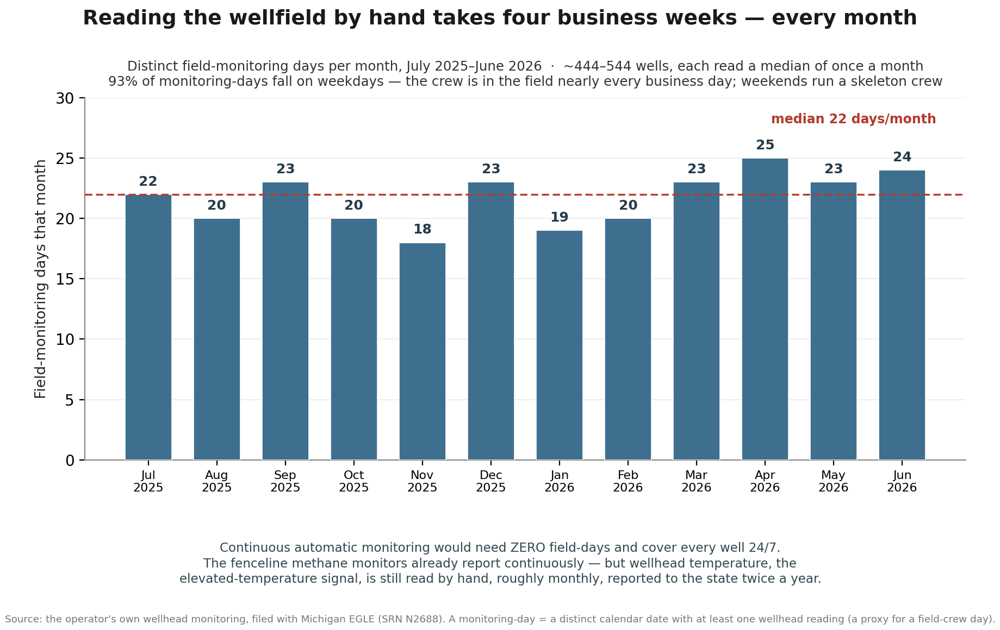

← Arbor Hills Monitor · Public comments & policy materials
Proposed Minimum Siting Protections
Arbor Hills has recorded wellhead temperatures as high as 177°F. Yet the hottest reading in the assembled record was not classified as a temperature exceedance — and did not trigger the enhanced monitoring applied to wells without an approved higher operating value — because that well held a 180°F HOV.
Before any new landfill or landfill expansion is found consistent with the county's Materials Management Plan, the applicant should have to demonstrate that the new or expanded area will include clear protections to detect elevated temperatures early, determine their cause, prevent their spread, and keep regulators, emergency responders, and the public informed.
Listed below are three protections a neighboring resident is asking the Washtenaw County Materials Management Planning Committee to include in the plan's minimum landfill siting criteria. Every number cited is drawn from the public record, and the principal sources are identified below.
Protections · Local record · Federal gap · Legal basis · Sources
The three protections
For any new landfill or landfill expansion, before waste is placed in the new or expanded area, the applicant would have to demonstrate that the facility's design and proposed EGLE-approved operating and emergency-response plans incorporate these protections for the operating life of that area.
1. Continuous wellhead monitoring, alerting, and public data
- The facility must continuously monitor, across the gas-collection field, temperature, oxygen, methane, and carbon dioxide, with carbon monoxide measured as an additional indicator used to characterize possible oxidation or another heat-generating reaction.
- The professional-engineer-certified SET plan must establish a quantitative “oxidation signature” based on gas concentrations, temperature trends, persistence, and other relevant indicators.
- The facility must automatically notify the County and the state within 30 minutes of a reading at or above 145°F or detection of the defined oxidation signature.
- If a confirmed reading reaches 160°F, the facility must immediately notify the fire departments responsible for the site — Salem Township, as the primary jurisdiction, and its automatic-mutual-aid partner, the City of Novi — together with the regional mutual-aid network they draw upon and the public health departments of all three bordering counties: Oakland, Washtenaw, and Wayne.
- The monitoring data must be publicly accessible as close to real time as the monitoring method allows.
2. Corrective action and fire response
The facility's approved operating and emergency-response plans must provide that, for any reading at or above 145°F, regardless of any higher operating value approved for the well:
- Corrective action begins within 5 days.
- A root-cause analysis is completed if the well is not below 145°F within 15 days.
- The well is monitored at least weekly until the plan's resolution criteria are satisfied.
- Corrective actions, monitoring results, and the basis for closing the event are reported publicly.
Resolution must not be based on a single below-threshold reading. The approved plan must require evidence of sustained temperature reduction, stabilization of methane, carbon dioxide, oxygen, and carbon monoxide trends, and no indication that the affected area is spreading.
For any reading at or above 170°F, the approved plans must also provide that waste placement and non-essential activity within 400 feet of the well cease until the resolution criteria are satisfied. Access within that area must be limited to trained personnel acting under an approved Incident Action Plan.
3. Required SET and smolder-prevention plans
The facility must maintain two written, professional-engineer-certified, publicly available plans. The plans must be reviewed at least annually and every four months whenever any well is at or above 160°F.
- A Subsurface Elevated-Temperature Monitoring and Management Plan must provide for classification of each event; in-situ monitoring of temperature, oxygen, methane, carbon monoxide, and carbon dioxide at a density of at least one monitoring point per two acres of the affected area, plus a leading-edge sentry line; tiered action thresholds; defined resolution criteria; and public reporting.
- A Smolder and Fire Prevention and Public Health Response Plan must include a sensitive-receptor inventory covering the nearest homes and Salem and Ridge Wood elementary schools; prevention measures; a tiered response toolbox; and a named notification chain covering Salem Township Fire Department, the City of Novi as its automatic-mutual-aid partner, the regional mutual-aid network Salem can call — including Superior Township and the Northville departments — and the public health departments of Oakland, Washtenaw, and Wayne counties.
Salem Township describes its fire department as staffed by paid-on-call members who hold outside jobs. The proposal therefore identifies mutual-aid resources in advance rather than assuming additional response capacity will always be immediately available.
Why these protections — the local record
The operator's own wellhead monitoring, filed with Michigan EGLE under SRN N2688, documents a persistent elevated-temperature condition.
Fifty-seven wells have peaked at or above 131°F — the wellhead-temperature threshold retained in the federal New Source Performance Standards and Emission Guidelines, and identified by EPA research as a common indicator of an elevated-temperature landfill. Approximately 26 wells reached that level in the most recent half-year. During the assembled record, 15 wells reached the NESHAP's 145°F operating threshold, four reached 160°F, and the highest measured temperature was 177°F.
These are wellhead readings, not downhole temperatures. Every temperature shown here is the temperature of landfill gas measured at the surface wellhead. Actual subsurface (downhole) waste temperatures can run higher, because the gas cools as it rises to the wellhead, so these readings tend to understate the reaction itself. That is one reason Protection 3 also requires in-situ, at-depth monitoring within the affected area.



Why the existing federal rule is not enough
Federal landfill air regulations do not use a single temperature threshold. Under the federal New Source Performance Standards and Emission Guidelines, 131°F remains a wellhead operating and corrective-action threshold. EPA also identifies temperatures above 131°F as a common indicator of an elevated-temperature landfill.
Under the landfill NESHAP/MACT provisions applicable at Arbor Hills, the default wellhead operating temperature is 145°F. A reading above that applicable operating value ordinarily triggers corrective action and enhanced monitoring. An operator seeking authorization to operate a particular well above 145°F may submit supporting data and request regulatory approval of a higher operating value, or HOV.
This is not hypothetical at Arbor Hills.
On March 14, 2025, well AHW272R4 reached 177°F — the highest measured wellhead temperature in the assembled 2021–2026 record and 32°F above the federal default 145°F operating temperature. EGLE had approved a 180°F HOV for the well on February 19, 2025, just 23 days earlier.
Because 177°F remained below the approved 180°F value, the reading was not counted as a temperature exceedance. The operator's First Semi-Annual 2025 NESHAP compliance report omits AHW272R4 from its temperature-exceedance table, consistent with the report's stated rule:
“The tables in Appendix A don't include wells with approved higher operating values (HOV) if the temperature did not exceed the HOV.”
Dozens of other readings above 145°F occurred at wells that held no such approval. As a result, the 177°F reading at AHW272R4 did not trigger the enhanced-monitoring regime that applied to wells exceeding 145°F without an approved HOV — even where those wells recorded lower temperatures.
This establishes that the HOV changed the reading's compliance classification and enhanced-monitoring treatment. It does not establish that a Violation Notice otherwise would have been issued, and compliance under the HOV does not by itself establish that no subsurface reaction was occurring.
The federal system serves an air-compliance purpose. It does not necessarily answer the different question this proposal addresses: is an abnormal, heat-generating condition developing or spreading beneath the landfill?
Compliance at an individual gas well and detection of an evolving subsurface reaction are not the same thing. EPA's research on elevated-temperature landfills treats rising temperature, falling methane, and increasing carbon dioxide, carbon monoxide, hydrogen, and other changes as indicators of the underlying condition.
When EPA proposed raising the applicable wellhead standard to 145°F, the technical basis it cited — an industry manual of practice — noted that landfill gas above 135°F “indicates a possible subsurface oxidation event” and that temperatures above 140°F “could indicate aerobic conditions.” See EPA's proposed Municipal Solid Waste Landfills NESHAP review, 84 Federal Register 36670, July 29, 2019. Therefore, “145°F is the compliance line” and “nothing concerning is happening below it” are not equivalent statements.
The proposed protections therefore do not treat any single compliance value — whether 131°F, the NESHAP's 145°F default, or a regulator-approved HOV — as the sole measure of whether an abnormal, heat-generating condition is developing or spreading. They use continuous monitoring, gas chemistry, temperature trends, defined response triggers, and evidence-based resolution criteria to evaluate the underlying condition itself.
Why the committee has a decision to make
Michigan law requires the county's Materials Management Plan to establish minimum siting criteria. The statutory framework and EGLE's implementation guidance provide room for criteria that reflect local conditions and differ by facility type.
Read the full Part 115 textual analysis → A detailed brief explains the statutory-construction case, the division between county plan-writing and EGLE enforcement, and the Legislature's facility-specific choices.
- The plan must include minimum siting criteria. A Materials Management Plan “shall include a siting process with a set of minimum criteria.” MCL 324.11579(1). Establishing those criteria is a required part of the planning process, not a discretionary addition.
- Host-community approval does not replace the minimum criteria. A facility that is not automatically consistent must follow the siting procedure and meet the plan's minimum siting criteria under MCL 324.11585(3)(b). Subsection (3)(c) then separately requires either host-community approval or compliance with supplemental siting criteria. That is why protections intended to apply regardless of host approval belong in the minimum tier.
- Criteria may be tailored by facility type and incorporated into the consistency determination. EGLE's siting guidance recognizes that the siting process and criteria may differ by facility type. Part 115 also distinguishes between local requirements incorporated into the planning framework and free-standing local regulation. Under MCL 324.11583, a local requirement that conflicts with Part 115 is unenforceable, and a requirement regulating facility location or development may also be unenforceable if it is not part of, or consistent with, the applicable MMP. This proposal therefore places the requested design and planning commitments within the MMP consistency process rather than presenting them as a separate county operating ordinance.
- One textual indication supports more-protective landfill criteria. Part 115 expressly limits how restrictive local siting criteria may be for materials-utilization facilities, such as composting and recycling facilities: the criteria cannot be so much more restrictive than state law that no such facility could be developed anywhere in the planning area. MCL 324.11579(3). The statute does not state the same limitation for landfills. That distinction supports — but does not by itself conclusively establish — the interpretation that landfill siting criteria are not categorically invalid merely because they are more protective than the statewide minimum.
- EGLE independently evaluates consistency. EGLE must independently determine whether a facility is consistent with the applicable MMP during its review of a construction-permit or operating-license application. The applicant must document that consistency. MCL 324.11585(5). Consequently, minimum criteria are part of the facility-specific consistency determination rather than merely aspirational county policy.
This proposal does not ask the County to issue an air permit, replace EGLE as the landfill's operating regulator, or independently administer federal landfill-air rules. It asks that, before a new landfill or expansion is found consistent with the MMP, the applicant demonstrate that its design and proposed EGLE-approved plans incorporate specified elevated-temperature protections.
The committee heard a similar description of its role in its own materials. The county's August 19, 2026 briefing packet said state rules “set the floor,” with “the county layer … on top of these, generally more protective.” It also stated that the 2022 revision of Part 115 prioritized local control of facility siting and regulation of landfill development, reinforcing the role of county MMP criteria where local conditions warrant additional protection.
The persistent elevated-temperature condition documented here — beside homes and two elementary schools — is the type of local condition the committee should consider when establishing its minimum siting criteria.
A model advancing into law
California's AB 28 (2026), which addresses landfill subsurface temperatures, passed both houses of the California Legislature and was enrolled on September 4, 2026. As of September 7, 2026, it was awaiting action by the Governor.
The enrolled bill would define a landfill “subsurface elevated temperature event” as an event in which subsurface gas or waste temperatures persistently exceed 131°F over a substantial area and meet additional performance criteria established by the responsible state agency. It would authorize monitoring, notification, corrective-action, multiagency-response, public-health, and enforcement measures.
Independent academic researchers and scientists at the U.S. Environmental Protection Agency have also published extensively on elevated-temperature landfills. The committee can obtain independent technical assistance from those researchers when evaluating these proposed protections.
In closing
The question before the committee is narrow and forward-looking: what should a new landfill or expansion have to prove before it is found consistent with the county's Materials Management Plan? The elevated-temperature record documented here, next to occupied homes and two elementary schools, is why the answer should include the ability to detect an abnormal subsurface condition early, to act on it on a defined schedule, and to keep emergency responders and the public informed throughout. Writing these three protections into the minimum siting criteria would not slow responsible development or displace EGLE as the landfill's regulator. It would set a clear, enforceable baseline so that the next facility is designed and operated to catch a subsurface reaction while it is still small, rather than after it has spread beneath the community.
Principal sources
- Operator wellhead-monitoring records filed with Michigan EGLE, SRN N2688, July 2021–June 2026.
- Michigan EGLE approval of a 180°F higher operating value for AHW272R4, February 19, 2025.
- GFL Environmental, 2025 First Semi-Annual NESHAP Compliance Report, page 6 and Appendices A and F.
- Arbor Hills well-by-well thermal map.
- U.S. EPA: Elevated Temperature Landfills.
- Federal wellhead temperature standards, corrective action, and monitoring — NESHAP subpart AAAA: 40 CFR §63.1958, §63.1960, §63.1961; NSPS subpart XXX: 40 CFR §60.763, §60.755; Emission Guidelines subpart Cf: 40 CFR §60.34f.
- EPA, Proposed Municipal Solid Waste Landfills NESHAP Review, 84 Federal Register 36670, July 29, 2019.
- Michigan Part 115, including MCL 324.11579 and 324.11585.
- Michigan EGLE, Guide to Developing a Siting Process.
- Washtenaw County Materials Management Planning Committee briefing packet, August 19, 2026.
- California AB 28, enrolled September 4, 2026.